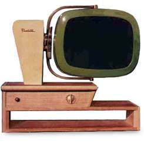
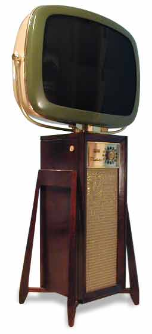
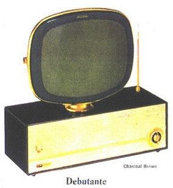
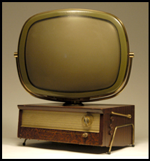
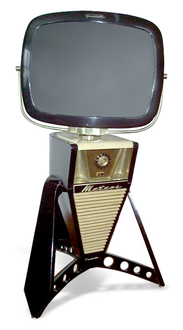
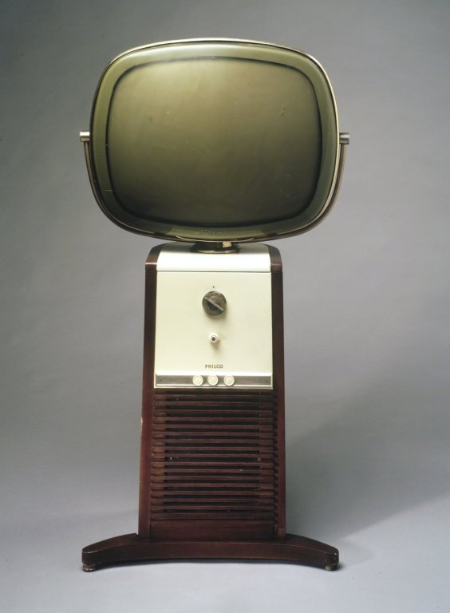
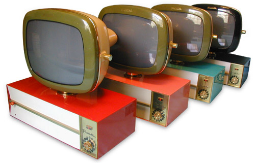

The only Predicta TV ever produced with two-axis rotation! The Chalet (affectionately dubbed the Drive-In), another Telstar original, is created with the fun shapes and designs of the Fifties in mind. A tribute to the great American Icon, the Drive-In Theater. The simple outward design is supported by a complete infrastructure designed to support and balance the weight of the picture tube. The 18" color picture rotates left right, and up and down, on its axis.

Also marketed under the name Continental, it is the rarest of the Philco Predicta Models. This Scandinavian-inspired design with its mid-century appeal will be the perfect compliment to your amoebae coffee table. Its 24" color screen on a floor standing hand-crafted cabinet of either maple or mahogany commands attention. The attraction to the Danish Modern comes from one of the most basic rules of mid-century modern design: simple geometric angles creating a complicated geometic form. The seemingly simple rectangular cabinet takes on a whole new look when the legs attach to the side. Four angled, tapered legs extend from the slim straight cabinet to give the set its rocket ship feel. Each "simple" leg has 8 different angles to its form, combined at a 42 degree angle to meet the cabinet. Gold cloth keeps with the streamline styling finished with a brass shadowbox that houses the functioning channel selector, Predicta script, and a stylized Telstar "T".

Simple, smart, and bright, the Debbie is the most economical Predicta television. Built for motels, fleet units, and the student's budget, the Debbie is the little sister to the Princess, alike in every way sans her big sister's brass shadow box and channel selector. The Debbie still treats you with an on/off volume button and remote control. Everyone has room for the Debbie!

he most cosmopolitan model. This lavish table top will be perfect for your entertaining needs and cocktail parties. Its 24" color screen on a hand crafted solid maple or mahagony cabinet rests in a brass antenna-like cradle lifting it off the table surface. Of all Predicta TV models, and perhaps true of all TVs ever produced, the Holiday's design is the most authentic to mid-century modern design. It subtly captures the geometries and lines essential to mid-century form. Its exaggerated sqaure box is complimented with exact square side cuts. Removing the lower portion of the front cabinet creates a cantilevered effect while the weight and position of the tube provide harmony and balance.

he Meteor is for those seeking a television that's on par with the elevated aesthetic of their living space. Its departure from the rectangular form of the classic Predicta TV breaks into new design territory -- pushing the envelope of television design and materials.This product is about style. The aircraft-inspired legs and struts lift the design. Their unique form gives the base a forward-facing bulldog stance, while the mass of the solidly anchored set appears to hover.The hand-built hardwood cabinet and legs are finished in hand-rubbed gloss black lacquer and accented by a maple top and grillwork. The 24-inch screen pivots on a polished CNC-machined brass collar, complementing the fine woodwork of the cabinet below. An acrylic-faced shadow box with polished brass back plate, bracketed by a pair of sculpted brass "air intakes", provides depth behind the lighted dial channel selector.

The most recognizable and popular of our Predicta TV models. And why not? This handsome classic compliments any room's decor. Affectionately known as the "barber pole," it is equipped with a 24" color screen on a floor standing hand crafted wood cabinet of solid maple or mahagony. Its round back and tapered base provide pleasing, simple, clean lines. This unique taper creates a slight rocket ship effect (some mistakenly call this taper a defect!). With its grill of tapered columns, contrasting maple front, and stylized Predicta script, its design is the most dynamic for custom variations and combinations.

This petite beauty is perfect for those small places or cozy corners. It is a charming addition sure to brighten your office, studio apartment, kitchenette, or daughter's bedroom. Equipped with an 18" color screen (24" also available) mounted on a sturdy metal cabinet, it is available in striking colors reflecting the fun and optimism of the times. Its decorator styling is accented by a brass bar that dissects the perforated speaker screen. A brass shadow box houses the functioning channel selector, Predicta script, and stylized Telstar "T". For available options, see below.